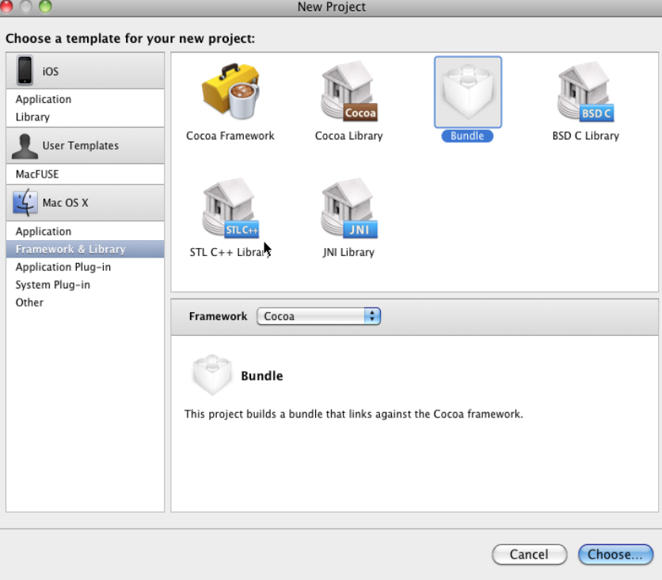
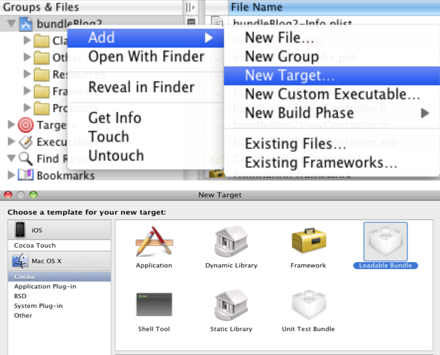

iOS插件化开发之bundle
IOS插件开发最重要的一个技术点就是bundle的应用。一共有两种方式来完成这个目的，分别是直接构建bundle工程和在普通IOS工程中添加bundle target。【以下内容以xcode3为例】
构建工程
- 直接构建bundle工程
根据网上资料，没有提到bundle用于IOS（用于MAC），并且在新建工程时也没有IOS bundle的选项。因而，要直接构建，需要先选择构建MAC bundle，然后修改配置来达到这一目的。
首先，构建一个MAC bundle工程，如下所示： 
步骤完成后，进入工程主界面。双击target，打开构建配置界面，将使用的SDK由MAC的变为IOS的（别忘了将Configuration项改为“All Configurations”）：
关闭此界面，删除External Frameworks and Libraries下面的framework，添加UIKit.framework和Foundation.framework。
然后向工程中添加自己所需的源文件就可以了。
- 在普通IOS工程中添加bundle target
新建一个IOS工程，在主界面右击Groups&Files中的任一项，如下选择：

完成后，xcode会自动打开配置界面，搜索“app”，将“other linker flags”和"GCCPREFIXHEADER"的值删除（很好找，粗体）。
关闭配置界面，将bundle希望包含的资源拖入Copy Bundle Resources，将希望编译的源文件拖入Compile Sources，将希望链接的库拖入Link Binary With Libraries。完成。
一些细节
- principalClass
由于插件外对于插件的内部实现应该尽量少的了解，达到较好的封装，因而，根据上一篇文章已经论述的，插件内外通过协议进行通信。而principalClass无疑是一个很好的媒介。代码如下：
Class aClass = [aBundle principalClass]; id anInstance = [[aClass alloc] init];
关于这个类的设置，只要找到bundle的plist，添加一个Key，在下拉列表中找到Principal class，并将你所希望的类名设为value就可以了。
- 证书
在模拟器上跑时，以上步骤足够了。但是，当在iphone真机上下载bundle并运行时，程序会coreDump。这是因为xcode3无法正确给bundle打入证书（xcode4 不详）。通过以下步骤对其进行更正：
在bundle的target上点击右键-Add-New Build Phase->New Run Script Build Phase
添加如下命令：
codesign -fs "iPhone Developer" ${BUILT_PRODUCTS_DIR}/${FULL_PRODUCT_NAME}其中，iPhone Developer即为打包证书使用者。